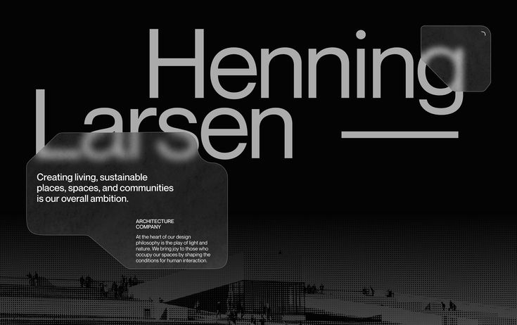

Bosch Mexico
Current work around AI, data, analytics, SAP-to-modern-data, dashboards, and business-facing systems at a high-level, non-confidential summary layer.
Enterprise AI / Data / AnalyticsArtificial intelligence, strategic systems, and long-term capital vision.
Technology and finance are tools. The mission is human progress.
A curated gateway into my ventures, corporate background, selected work, and long-term direction.
Four domains, one central identity.
Investment, governance, and long-term capital strategy.
Consulting, implementation, and executive-standard business transformation.
Professional background, enterprise experience, and selected credentials.

Independent builds, prototypes, experiments, and selected technical work.
I work at the intersection of AI, data systems, business execution, and capital thinking. The current public site is being reorganized so each audience can enter through a clear path without reading a long biography first.
Core intersections: AI, data systems, finance, strategy, robotics, and venture architecture.
A compressed set of signals that points into deeper sections without turning the homepage into a long CV or a complete project index.
Current work around AI, data, analytics, SAP-to-modern-data, dashboards, and business-facing systems at a high-level, non-confidential summary layer.
Enterprise AI / Data / AnalyticsInvestment, governance, and long-term capital strategy through a dedicated venture platform.
Capital / Governance / ExternalConsulting, implementation, and executive-standard business transformation for companies seeking clarity, structure, and scale.
Strategy / Systems / ExecutionPublic talks and workshops covering data analytics, explainable AI, and robotics education.
Speaking / Workshops / Public SessionsA consulting and implementation platform designed to translate business ambiguity into structured operating systems, decision frameworks, and execution roadmaps.
A strategy and systems studio focused on practical business transformation, operational design, and implementation support.
Helps clarify priorities, structure execution, improve process visibility, and turn fragmented business operations into coherent systems.
Works through diagnosis, architecture, implementation, and executive-ready documentation with a bias toward precision and measurable progress.
Led by Baruch Lopez, combining AI systems, business analytics, and capital-oriented strategic thinking.
Only non-confidential, high-level summaries are presented. This section should explain current enterprise focus, capabilities, safe work areas, and credentials without exposing sensitive implementation details.
V1 keeps this as a curated static preview. The future Lab should evolve into a filterable project system with status, affiliation, type, domain, and year metadata.
Multi-GPU training, aerial image processing, and deep learning workflows for vehicle detection.
PyTorch / TensorFlow / Computer Vision / High-Performance TrainingCondensed, high-level summary of SAP, MES, SQL, ETL, and Power BI work for operations visibility.
SQL / Power BI / ETL / OperationsRoute optimization work using Python, graph logic, and geolocation-driven planning concepts.
Python / Graph Theory / OptimizationA future lane for publishing concept notes, operating models, and technical-business frameworks as the platform evolves.
Research / Strategy / Draft SystemsThis page family should support talks, essays, interviews, and future media formats. V1 keeps the talks visible and leaves explicit placeholders where writing/media are not ready yet.
Shared how data becomes a strategic asset and outlined practical fundamentals for responsible analysis.
Focused on transparency, interpretability, and ethical implications of AI-assisted decision making.
Taught robotics and programming basics through hands-on projects and practical exercises.
Future long-form reflections on AI systems, capital strategy, and the operating logic behind selected ventures and projects.
A future archive for interviews, public conversations, and external references once those assets are ready to publish.
A reserved space for essays, notes, presentations, and other editorial formats that extend the platform over time.
For consulting, ventures, speaking, technical collaborations, or direct professional contact.